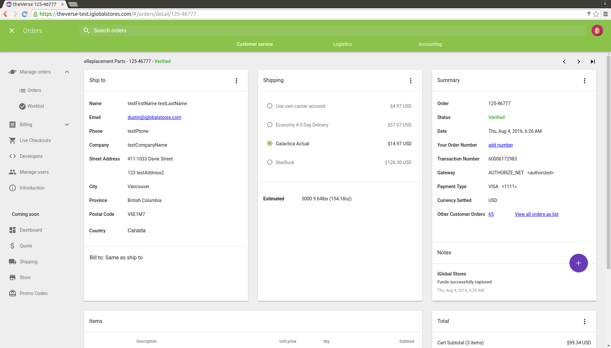
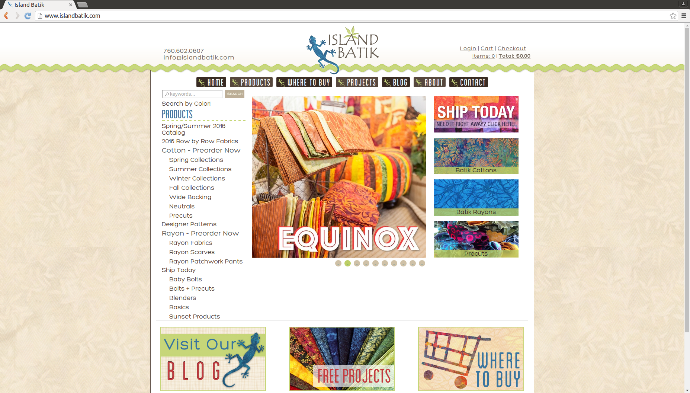
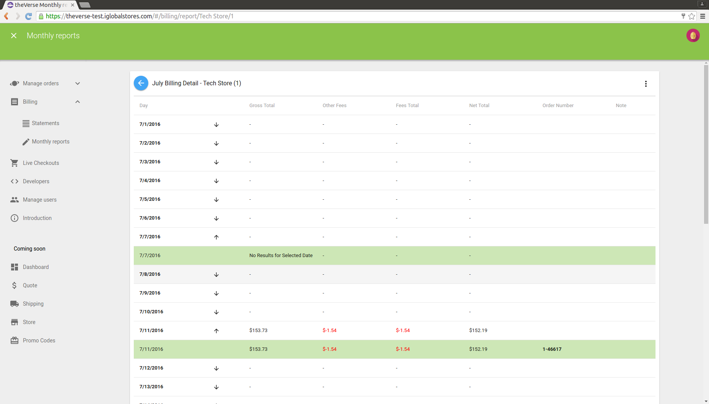
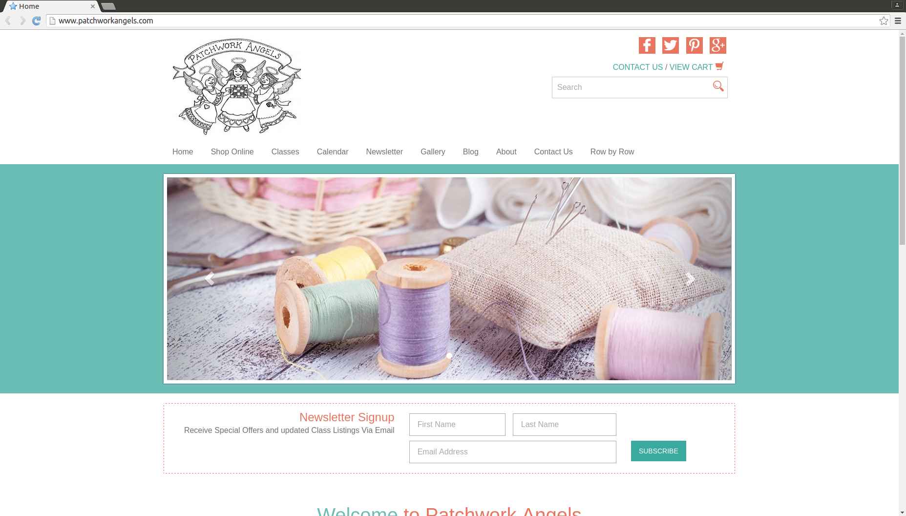
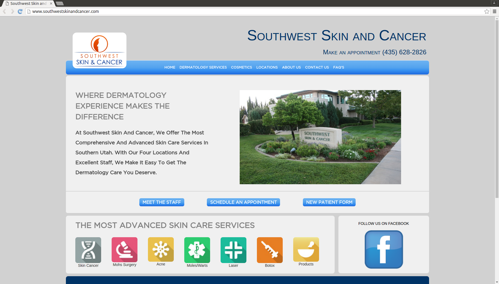
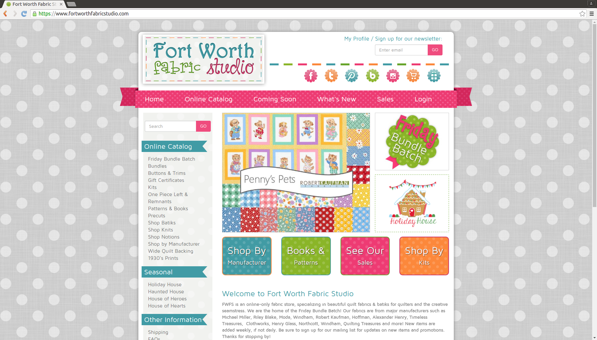

<link rel="import" href="../../bower_components/polymer/polymer.html">
<link rel="import" href="../../bower_components/paper-styles/typography.html">
<link rel="import" href="../../bower_components/paper-dialog/paper-dialog.html">

<dom-module id="my-work">
  <template>
    <style include="shared-styles">
      :host {
        display: block;
      }
      .fonts {
        font-family: "din-condensed-web";
      }

      .large {
        font-size: 3.5rem;
        text-transform: uppercase;
        text-align: center;
        color: #444;
      }
      #text {
        float: left;
        width: 60%;
      }
      #pageWrapper {
        padding-left: 10%;
        padding-right: 8%;
        margin-top: 30px;
      }
      p {
        margin-right: 50px;
      }
      #image {
        width: 40%;
        float: left;
      }
      img {
        width: 100%;
      }
      iron-icon {
        width: 88px;
        height: 88px;
        color: crimson;
        display: block;
        margin-top: 20px;
      }
      #resume {
        text-decoration: none;
        color:crimson;
      }
      #github {
        text-align: center;
        text-decoration: none;
        color: black;
        position: relative;
        left: 20px;
      }
      #verseIframe, #verseFinancialIframe {
        width:97%;
        height:90%;

      }
      #verseModal {
        height: 80%;
        width: 80%
      }
      #verseFinancialModal{
        height: 80%;
        width: 80%
      }
      #icons {
        height: 160px;
      }
      #pageWrapper {
        height: 740px;
      }
      a {
        text-decoration: none;
        color:crimson;
      }
      a:hover {
        color: red;
      }
      .row {
        margin-top: 20px;
      }
      .box span {
        position: relative;
        top: 7px;
        font-size: 1.3em;
      }
      .box {
        cursor: pointer;
        width: 27%;
        float: left;
        margin-right: 30px;
        border: 1px solid #aaa;
        padding: 20px;
        border-radius: 4px;
        margin-top: 30px;
        text-align: center;
        position: relative;
        background: #fff;
        overflow: hidden;
        min-height: 160px;
      }
      .inner {
        position: absolute; 
        top: 0; right: 0; bottom: 0; left: 0; /* places it exactly inside its container */
        padding: 10%;
        background: #fff;
        overflow: hidden;
        height:100%;
        min-height: 160px;
        display: none;
        color: white;
      }
      .box:hover div.inner{
        bottom: auto;
        display: block;
        z-index: 100;
        background: rgba(0,0,0,.8);
      }
      #social {
        text-align: center;
      }
      span,
      input {
        @apply(--paper-font-body2);
      }
      @media only screen and (max-width: 1790px) {
        .box {
          width: 26%;
          margin-right: 30px;
        }
        .box span {
          font-size: 1.1em;
        }
      }
      @media only screen and (max-width: 1540px) {
        .box {
          width: 25%;
          margin-right: 25px;
        }
        .box span {
          font-size: .85em;
        }
        .inner {
          font-size: .85em;
        }
      }
      @media only screen and (max-width: 1322px) {
        .box {
          width: 24%;
          margin-right: 20px;
        }
        .box span {
          font-size: .8em;
        }
        .inner {
          font-size: .7em;
        }
      }
      @media only screen and (max-width: 1153px) {
        .box span {
          font-size: .6em;
        }
        .box {
          width: 23%;
          margin-right: 18px;
        }
      }
      @media only screen and (max-width: 1068px) {
        .box span {
          font-size: .5em;
        }
        .box {
          width: 22%;
          margin-right: 18px;
        }
      }
      @media only screen and (max-width: 988px) {
        .box span {
          font-size: .7em;
        }
        .box {
          width: 35%;
          margin-right: 18px;
        }
        .inner {
          font-size: .85em;
        }
      }
      @media only screen and (max-width: 830px) {
        .box span {
          font-size: .5em;
        }
        .box {
          width: 33%;
          margin-right: 18px;
        }
        #pageWrapper {
          padding-left: 0%;
          padding-right: 0%;
          margin-top: 30px;
        }
        .inner {
          font-size: .7em;
        }
      }
      
    </style>

    <br>
    <span id='top'>
      <hr style="border-top: 2px solid black;">
      <br>
      <div class='fonts large'>My Work</div>
      <br>
      <hr style="border-top: 2px solid black;">
      <h3 style='text-align: center; font-family: "din-condensed-web"; font-size: 1.4em;'>A Few Of The Cool Projects I've Built</h3>
    </span>
    <div id='pageWrapper'>
     
        <div class='box' onclick="verseModal.open()">
          
          <span>The Verse Sass App</span>
          <div class='inner' on-click='removeInnerDiv'>This is the Verse order detail page, I am currently
            responsible for the content of this app.  I am also the single largest contributor at about 22,000 
            plus lines of code.  The Verse is a Javascript/Polymer front end and a Nodejs Java back end.
            <br><br>Click To See a Closer View
          </div>
        </div>
        <div class='box'>
          <a href='http://www.islandbatik.com/' target='_blank'>
            
            <div class='inner' on-click='removeInnerDiv'>This is a website that I helped to design and to develop.
              While working for Velocity Webworks I designed and built many websites and other apps.  This is a Python/Django site.<br><br>Click To See Island Batik's Site
            </div>
          </a>
          <span>Island Batik Site</span>
        </div>
        <div class='box' onclick="verseFinancialModal.open()">
          
          <span>The Verse Financials</span>
          <div class='inner' on-click='removeInnerDiv'>This is a screen shot of a financial page in the Verse, 
            among other things I'm entirely responsible for the financial content both front and back side for the Verse
            <br><br>Click To See a Closer View
          </div>
        </div>
        <div class='box'>
          <a href='http://www.patchworkangels.com/' target='_blank'>
            
            <div class='inner' on-click='removeInnerDiv'>Patchwork is another website that I helped to design and to develop
              while working for Velocity Webworks.<br><br>Click To See Patchwork Angel's Site
            </div>
          </a>
          <span>Patchwork Angels Site</span>
        </div>
        <div class='box'>
          <a href='http://www.southwestskinandcancer.com/' target='_blank'>
            
            <div class='inner' on-click='removeInnerDiv'>Southwest Skin and Cancer was my first website
              project and I built this one on my own using Ruby on Rails as the framework. <br><br>Click To See Southwest Skin and Cancer's site
            </div>
          </a>
          <span>Southwest Skin and Cancer Site</span>
        </div>
        <div class='box'>
          <a href='https://www.fortworthfabricstudio.com/' target='_blank'>
            
            <div class='inner'><br><br><br>Click To See Fort Worth Fabric Studio's site</div>
          </a>
          <span>Fort Worth Fabrics Site</span>
        </div>
   
      
    </div>

    <div id='social'>
        <a href='https://www.facebook.com/kyle.eardley.1' target='_blank'>facebook</a> / 
        <a href='https://github.com/kyleeardley' target='_blank'>github</a> / 
        <a href='https://www.linkedin.com/in/kyle-eardley-a9310b7b?trk=hp-identity-name' target='_blank'>linkedin</a>
      </div>

    <paper-dialog id="verseModal" modal>
      
      <div class="buttons">
        <paper-button dialog-confirm autofocus>Close</paper-button>
      </div>
    </paper-dialog>

    <paper-dialog id="verseFinancialModal" modal>
      
      <div class="buttons">
        <paper-button dialog-confirm autofocus>Close</paper-button>
      </div>
    </paper-dialog>
  
  </template>

  <script>
    (function() {
      'use strict';

      Polymer({
        is: 'my-work',

        properties: {
        },
        removeInnerDiv: function() {
          var innerDivs = this.querySelectorAll('.inner');
          for(var i=0; i < innerDivs.length-1; i++ ) {
            innerDivs[i].style.zIndex = 0;
          }
        },
        openTextBox: function() {
          console.log('openBox is firing');
        }
      });
    })();
  </script>
</dom-module>